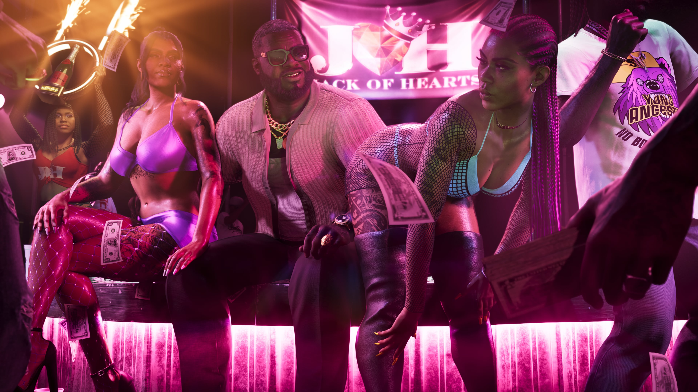

Dre'Quan Priest
Jovem empreendedor musical e parceiro de Boobie na Only Raw Records. Os dois querem conquistar espaço na cena musical de Vice City.
Conhecer Dre'Quan

Boobie Ike é uma lenda local de Vice City em Grand Theft Auto VI. Depois de construir sua reputação nas ruas, ele conseguiu transformar essa experiência em um verdadeiro império de negócios.
Imóveis, um strip club e um estúdio de gravação fazem parte de seus empreendimentos. Entre todos eles, sua parceria com Dre'Quan Priest na Only Raw Records ocupa uma posição especialmente importante.
Boobie é apresentado como uma verdadeira figura local de Vice City e demonstra ter consciência da reputação que construiu ao longo dos anos.
Sua trajetória o diferencia de muitos outros personagens ligados ao mundo do crime. Boobie conseguiu transformar o tempo que passou nas ruas em negócios legítimos.
Esse império se estende por diferentes áreas, incluindo investimentos imobiliários, um strip club e um estúdio de gravação.
Sua personalidade também acompanha essa posição. Boobie pode parecer descontraído e sorridente, mas sua postura muda quando chega a hora de falar de negócios.
A posição de Boobie em Vice City não depende de apenas um empreendimento.
A Rockstar apresenta o personagem como alguém que construiu um império legítimo que inclui imóveis, entretenimento noturno e produção musical.
Seu strip club também possui ligação com o núcleo musical. Dre'Quan Priest já trabalhou agendando artistas para o clube enquanto buscava espaço na indústria.
O estúdio e a gravadora Only Raw Records mostram que Boobie pretende transformar sua influência e seus recursos em sucesso também dentro da música de Vice City.

Entre os diferentes negócios de Boobie, sua parceria com Dre'Quan Priest é apresentada como aquela na qual ele está mais investido.
Dre'Quan sempre teve como objetivo entrar na indústria musical. Mesmo quando precisava vender nas ruas para sobreviver, a música continuava sendo seu plano.
Juntos, Boobie e Dre'Quan estão ligados à Only Raw Records, gravadora que procura conquistar espaço na cena musical de Vice City.
O próximo passo depende de algo fundamental: encontrar um grande sucesso capaz de colocar a gravadora em outro patamar.
Personagens diretamente conectados ao núcleo de negócios e música de Boobie Ike.
Jovem empreendedor musical e parceiro de Boobie na Only Raw Records. Os dois querem conquistar espaço na cena musical de Vice City.
Conhecer Dre'QuanBae-Luxe e Roxy formam a dupla Real Dimez, atualmente contratada pela Only Raw Records de Dre'Quan.
Conhecer Real DimezImagens oficiais de Boobie Ike divulgadas para Grand Theft Auto VI.
Esta área reúne somente informações apresentadas oficialmente para o personagem.
Boobie é apresentado como uma lenda local de Vice City.
O império legítimo de Boobie inclui negócios imobiliários.
Boobie possui um strip club ligado à vida noturna de Vice City.
Um estúdio de gravação também faz parte de seus negócios.
Sua parceria com Dre'Quan é o projeto no qual Boobie está mais investido.
Boobie e Dre'Quan estão ligados à gravadora Only Raw Records.
As informações desta página são baseadas em materiais oficiais publicados pela Rockstar Games.
Página oficial de GTA VI com informações sobre os personagens e o estado de Leonida.
Rockstar GamesApresentação oficial de Boobie Ike, Dre'Quan Priest e do núcleo musical de Vice City.
Ver fonte oficial